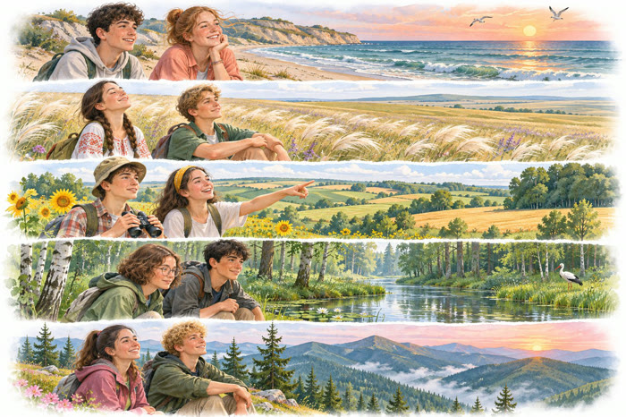

Listen to the text
Speed:

Our Geography teacher says that Ukraine is a textbook of nature with all the pages in one cover. To prove it, she took us on an imaginary journey from the south to the west. We travelled only with a map, photos and our imagination, but by the end of the lesson I felt tired and sunburnt. We started on the coast of the Black Sea. The climate here is mild and dry. Summers are hot and sunny, and winters are short and windy, with little snow. In the shallow bays there are thousands of birds: pelicans, herons and swans. In some salty lakes the water turns pink in summer because of tiny plants that love salt and heat. Then we moved north, into the steppe. It is a flat, open land with no forests, where the wind never stops. In spring it is covered with wild tulips and feather grass that moves like waves. Droughts are common here, and a summer thunderstorm is a real holiday. Most of the steppe has been turned into fields, so wild steppe is now rare and protected. Further north the landscape changes. Fields are mixed with oak woods and rivers. This is the forest- steppe, where the soil is black and rich, and the weather is moderate: warm summers, frosty winters and enough rain. In the north-west we entered Polissia, a land of pine forests, swamps and fog. It is cooler and wetter here. Elks, wolves and beavers live in these woods, and in autumn the ground is covered with mushrooms and cranberries. Our last stop was the Carpathians. The higher you climb, the colder it gets. At the foot of the mountains there are beech forests. Above them grow dark spruces, and at the top there are open meadows, where snow may lie until June. The weather changes every hour: sunshine, then hail, then a rainbow. "Five environments in forty-five minutes," said the teacher. "Each of them has its own plants and animals, and each of them is fragile. If the climate gets warmer, the steppe will move north, the swamps will dry, and the spruce forests will get ill." Homework: choose one of the five and find out how to protect it.
Tap any sentence to hear it again.
Сподобалось? На сайті ще більше матеріалів для вчителів!
Reader, презентації, ігри, діагностичні та контрольні роботи до підручників 1-11 класів.
Перейти на сайт materials.allaenglish.com